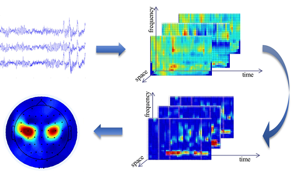
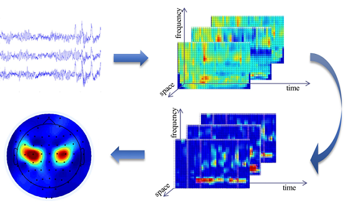

Basic info
- work at NIANTONG INTELLIGENCE(startup company)
- 2018.08-2021.09
- I’m responsible for hardware design, Embedded Software, algorithm and data analysis.
eCon-Hand
Stroke Rehabilitation Medical Device based on Brain-computer Interface controlled exoskeleton.
Abstract
After a stroke, motor cortex damage can result in impaired upper extremity motor function, limiting arm and hand movement.The muscles in the arm and hand are fine, but the brain has a hard time connecting.
eCon-Hand is an active rehabilitation device based on brain-machine interface technology, which includes a wireless electroencephalogram (EEG) headset and a portable exoskeleton robotic hand.
eCon-Hand uses stroke patients’ healthy brain activity when thinking about movement to retrain a new part of their brain to control their disabled arm.
The EEG headset records 10-channel brainwave signals and recognizes your intent from healthy parts of your brain when you imagine hand movement. The decoded motion commands are then wirelessly transmitted to the exoskeleton robotic hand.The exoskeleton robotic hand opens and closes the robotic handpiece in response to your intention to move your hand.
Neural mechanism

The Hebbian theory suggests that when pre-synaptic and post-synaptic neurons are excited together, their connectivity and plasticity are enhanced. Repeatedly matching brain neuron activity with peripheral nerve stimuli allows for the reshaping of brain function. Repeated therapy may improve motor function by strengthening connections and encouraging new pathways to healthy parts of the brain.
Multiple Prototype Design

First I used Intan Technologies’ RHD2116 as the EEG front-end amplification chip and connected the amplifier board to Neuroscan Quik-Cap as our electrode cap to verify this prototype.


After Adjusting the hardware and algorithms many times, I provide the prototype to the patient for testing human-machine interaction.

Event related spectrum perturbation (ERSP) at Motor cortex during rest state (left pic) and movement (right pic) in training session. Black box demonstrated significant decreases in alpha and beta band spectral power,that’s the feature we excited to see. Still having a lot of works to do with signal quality.Not bad!
Dr. Reid Harrison (founder of Intan Technologies) suggested me that RHD2216 is more suitable for invasive neural signal collection, as TI’s ADS1299 has lower noise and is better suited for EEG acquisition. So I changed the front-end amplification chip the next hardware version.
Go on……


From Prototype to Product


Technology & Innovation
Core Technology A: EEG recording and decoding
The EEG helmet can record 10 channels of brain signals and translate the raw signals into the patient’s movement intentions. Afterwards, the control signals are wirelessly sent to the exoskeleton for active rehabilitation.
 

Core technology B: Wearable hand exoskeleton
The hand exoskeleton can help the patient perform grasping tasks with the paretic hand. The exoskeleton’s maximum output force is 5N and the battery life is more than 4 hours. It communicates with the EEG helmet wirelessly.
Innovation One：Brain-computer interface based active rehabilitation
According to the Hebbian theory, ‘cells that fire together, wire together’, which means repeated association between brain activation and peripheral nerve stimulation will promote the reorganization of brain functions. Therefore, we developed an active rehabilitation system (eCon-Hand), which can decode the patient’s motor intention and provide neural feedbacks.
Innovation two：On-chip decoding of motor intention
Brain-computer interface can recognize the patient’s motor intention from EEG signals with massive calculations. So, BCI system usually uses a PC for signal processing, and the system configuration is complicated. To simplify it，eCon-Hand employs on-chip decoding of motor intention while the ram and flash of MCU are limited.
Clinical Efficacy
Patients fitting acceptance criteria average +8 points on the Fugl-Meyer (Gold Standard Test for Arm function after stroke).
In 12 clinical trials, eCon-Hand therapy has been shown to improve function in the upper extremity after stroke.